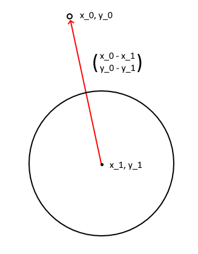

Vi starter med at få en vektor, der er lavet af differencen mellem jordens centrum og vores satellit's centrum, også forklaret som en vektor der "peger" fra jordens centrum til satelitten, som vi kalder $\vec{r}$. $\vec{r}$ er defineret således: $$ \vec{r} = \binom{r_x}{r_y} = \binom{x_0-x_1}{y_0-y_1} $$
Længden af vektoren $\vec{r}$ kalder vi $ r $. Dvs. $$ r = | \vec{r} | = \left | \binom{r_x}{r_y} \right | = \left | \binom{x_0-x_1}{y_0-y_1} \right | $$
Den bruger vi til at udregne tyngdekræften, fra satelliten til jorden, med formlen $$ F = \frac{GMm}{r^{2}} $$ Hvor $$ G = \text{tyngdekræftens konstant} = 6.674 \cdot 10^{-11} \frac{m^3}{kg \cdot s^2} $$ $$ M = \text{planetens masse i kg (i vores tilfælde jorden)} = 5.9722 \cdot 10^{24} kg $$ $$ m = \text{satellitens masse} $$ $$ r = \left | \binom{r_x}{r_y} \right | = \left | \binom{x_0-x_1}{y_0-y_1} \right | $$
Vi har dog kun den skalar kræft, som vi gerne skal have fordelt, så den trækker satelliten mod jorden, frem for f.eks. direkte ned, eller en anden tilfældig retning.
Til at gøre dette, fordeler vi den skalare kræft på en normaliseret $\vec{r}$, så vi skal starte med at normalisere den, som vi gør ved at dividere dens komponenter med egen længde.
Her er det vigtigt at huske, at vi tidligere definerede $\vec{r}$'s længde som $r$.
$$\vec{r_{n}} = \binom{\frac{r_x}{r}}{\frac{r_y}{r}}$$